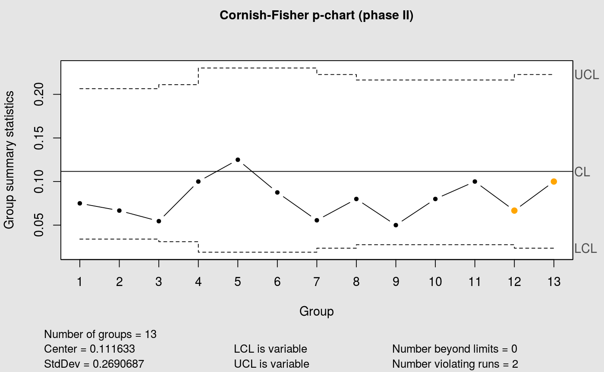
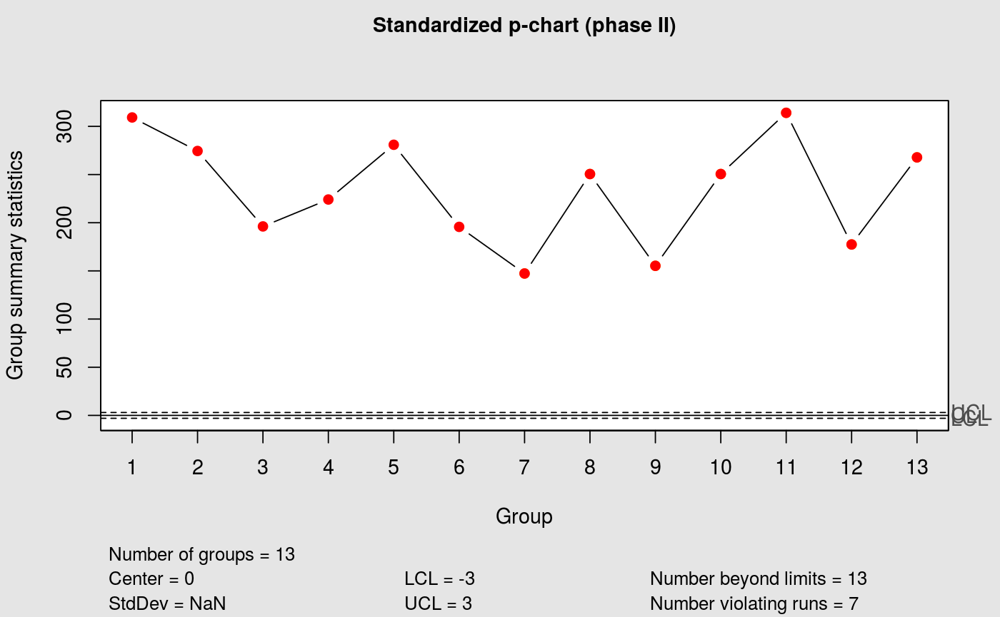

p-chart
This function builds p-charts.
cchart.p(x1 = NULL, n1 = NULL, type = "norm", p1 = NULL, x2 = NULL, n2 = NULL, phat = NULL, p2 = NULL)
Arguments
| x1 | The phase I data that will be plotted (if it is a phase I chart). |
|---|---|
| n1 | A value or a vector of values specifying the sample sizes associated with each group for the phase I data. |
| type | The type of p-chart to be plotted. The options are "norm" (traditional Shewhart p-chart), "CF" (Cornish Fisher p-chart) and "std" (standardized p-chart). If not specified, a Shewhart p-chart will be plotted. |
| p1 | The data used to estimate the phat (x1 / n1). |
| x2 | The phase II data that will be plotted in a phase II chart. |
| n2 | A value or a vector of values specifying the sample sizes associated with each group for the phase II data. |
| phat | The estimate of p. |
| p2 | The values corresponding to x2 / n2. |
Value
Return a p-chart.
Details
For a phase I p-chart, n1 must be specified and either x1 or p1. For a phase II p-chart, n2 must be specified, plus x2 or p2 and either phat, x1 and n1, or p1 and n1. The Shewhart is based on normal-aprroximation and should be used only for large values of np or n*p (n*p > 6).
References
Montgomery, D.C.,(2008)."Introduction to Statistical Quality Control". Chapter 11. Wiley
Examples
data(binomdata) attach(binomdata)#> #> #>cchart.p(x1 = Di[1:12], n1 = ni[1:12])cchart.p(x1 = Di[1:12], n1 = ni[1:12], type = "CF", x2 = Di[13:25], n2 = ni[13:25])cchart.p(type = "std", p2 = Di[13:25], n2 = ni[13:25], phat = 0.1115833)#> Warning: NaNs produzidos#> List of 11 #> $ call : language qcc(data = std, type = "p", sizes = n2, center = 0, limits = c(-3, 3), title = "Standardized p-chart (phase II)") #> $ type : chr "p" #> $ data.name : chr "std" #> $ data : num [1:13, 1] 37110 32935 21576 17927 22473 ... #> ..- attr(*, "dimnames")=List of 2 #> $ statistics: Named num [1:13] 309 274 196 224 281 ... #> ..- attr(*, "names")= chr [1:13] "1" "2" "3" "4" ... #> $ sizes : int [1:13] 120 120 110 80 80 80 90 100 100 100 ... #> $ center : num 0 #> $ std.dev : num NaN #> $ nsigmas : num 3 #> $ limits : num [1, 1:2] -3 3 #> ..- attr(*, "dimnames")=List of 2 #> $ violations:List of 2 #> - attr(*, "class")= chr "qcc"